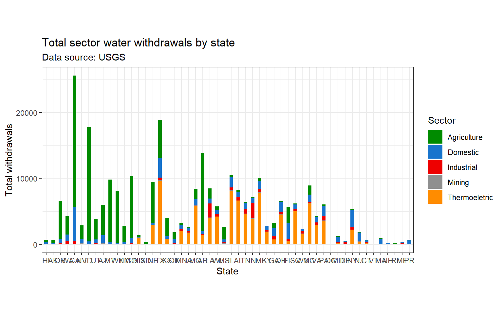

Goals
Read data into R and explore data frames
Use the help() function
Clean a data frame
Explore the tidyr, dplyr, and ggplot packages
Load in libraries and data
- In this lab, we will be using the tidyverse, here, and janitor
Load these libraries in by using the library function
library(tidyverse)
library(here)
library(janitor)Load in your data using here and read.csv and
water_use <- read.csv(here('docs/data/usco2015v2.0.csv'))help()
The help() function is a tool for understanding what a function does, what inputs it takes, and what outputs it gives. When you call the help function, the help page for the function you called will appear in the bottom right pane, a tab to the right of the Files tab.
The Help tab is great. At the bottom page you will find code examples for that function, you can run these yourself to get an idea of how to use a function! As you go through this lab, use the help() function to get more information on the functions we will be using. You can access the help for any function; for example, let’s use the help function to get information on the library function.
Step 1: Explore USGS water use datafame
In your script, read in the .CSV file from the prelab and make sure it is assign it to an object named water_use. Let’s take a look at our water_use data frame in the Global Environment.
Notice anything unfriendly about our data frame?
In the console, use the class function to confirm that water_use is a data frame. Because of the way the data is currently being loaded, it will be difficult to use for data analysis. Let’s call help on read.csv and find the arguments section. Arguments are inputs for a function which will change the output; not all arguments are required for the function to run. The description of each argument will explain what it does and what values are required for an argument (i.e., the input into the function) and whether it is required.
There is an argument that lets you skip lines of a data file before the data is read in. Find and implement this argument to have the data read in after skipping the first line. With this added argument you can run the code again, overriding the previous assignment made to the water_use object. That is, in your script, update your code so that it now has this additional argument; then run your code.
Step 2: Cleaning columns
clean_names()
Let’s take a look at our column names.
The clean_names function from the janitor package can help us “clean up” the names of a data frame, creating unique column names consisting only of the underscore (i.e., _ character), numbers, and letters. This is very useful because, using the function, means that we will now have consistent column names that all have lower case letters and do not contain spaces or odd symbols that could create errors. In your script, let’s apply clean_names() to water_use.
water_use <- clean_names(water_use)Check your column names; you should see that all of your columns are now in “snake_case”
"ThisIsNotSnake.Case""this_is_snake_case"rename()
The rename() function also allows you to rename column names. The first argument for the rename function is the data frame, the second argument is the column you’d like to rename. The format for using rename is:
object_name <- rename(data_frame_name, new_name = old_name)From your water_use data frame, use rename() to change the tp_tot_pop column name to population. HINT: Make sure you assign this function to water_use so it is applied to your object, and not just outputted into the console.
Step 3: The pipe operator (%>%)
The pipe operator is denoted by this symbol %>%. The RStudio keyboard shortcut is Cmd+Shift+M (Mac) and Ctrl+Shift+M(Windows). The pipe operator passes the object on the left hand side of the pipe into the first argument of the right hand function. This will help consolidate your workflow in R and allows you to apply a series of functions to an object instead of having to continually reassign your function step to a new object and then perform the next function step.
Example:
When we read in our data and then used the clean_names and rename, we did this in 3 separate steps, reassigning our function to the new output after applying each function like so:
water_use <- read.csv(here('data/usco2015v2.0.csv'), skip = 1)
water_use <- clean_names(water_use)
water_use <- rename(water_use, pop = tp_tot_pop)And this is the same operation using the pipe:
water_use <- here('data/usco2015v2.0.csv') %>%
read.csv(skip = 1) %>%
clean_names() %>%
rename(pop = tp_tot_pop)The pipe allows you to express a sequence of multiple operations without having to do a reassignment after each intermediate step. This simplifies your code, making it easier to read, and understand. Going forward through this lab, all of the example code will be shown both with and without the pipe operator so you can get used to seeing how it works.
Step 4: Change column data type
In the Global Environment, click on the blue circle with a white arrow that is to the left our your water_use data frame. This should reveal information about your data frame for a quick view. Next to each column name, you will see that a data type has been assigned. Look through the columns and the data types.
Before analyzing the data, it is important that we change the columns so that they match the data type expected. This will allow us to analyze the data later. To change from one data type to another we can use the set of functions: as.numeric, as.character, as.integer, as.Date, as.factor…there are many more!
Let’s try the following to see how these functions work. You can write this code in your script or console. If you do it in your script, make sure to comment it so that you know that it is an example.
x <- "3"Let’s use the class function to check the data type. What we do see? Does it make sense for use, in our application, to have a number classified as a character? Probably not – though there may be situations that we do want a number to be a character…can you think of one?
To change x’s data type, we need to coerce it into a number. We can use the as.numeric function to do this and check the coercion with the class function.
x <- as.numeric(x)
class(x)## [1] "numeric"
To do this for an entire column we can use a subsetting technique (from lab 02) to coerce a column from a character to numeric using as.numeric. To do this, we will want to make sure we are reassigning the column’s data type within water_use.
To start, let’s try this on one column – the column named ps_gw_pop. Before we start, in the console, type the following
class(water_use$ps_gw_pop)## [1] "character"This should confirm that we selected a column whose data type is classified as a character.
Now, let’s coerce it into a numeric in our script
water_use <- as.numeric(water_use$ps_gw_pop)In the console, let’s confirm the coercion, using the class function.
mutate_at()
You probably noticed that there are quite a few columns that are characters but should be numeric. It would not be efficient for us to write out each one of these columns! Instead, we can use the mutate_at function to select a number of columns all at once to coerce into numerics. There are many ways to do this; mutate_at is one of many.
Before we apply mutate_at, we will want to identify the group of columns that will need to be coerced. The good news is that, if we apply as.numeric to a numeric, nothing happens. This will apply us to select all the columns after fips.
water_use <- mutate_at(water_use, c(7:141), as.numeric)Using the pipe:
water_use <- water_use %>%
mutate_at(c(7:141), as.numeric)Look at your console. There is a warning that pops up; note that warnings do not stop your code from running, but they are important. R is sending this warning as it was forced to deal with the “–” characters by coercing them into NAs and it wants to let you know!
Step 6: subset by column only
select()
We can use the select function to subset the variables or columns that we want. It is important to know that the data frame you want to subset is ALWAYS the first argument in the function.
Also, select allows you to enter the names or the indices (position) of column names in a data frame. Select is from the dplyr package (i.e., a package within tidyverse) and is a simple way of subsetting columns.
NOTE: All subsetting done using select can also be accomplished using the [] and $ methods. It is just a matter of convenience, preference, and situation. It should be noted that using select is NOT a replacement for the subsetting techniques we learned in the previous lab. The [] and $ methods are essential techniques that you will invariably need to use in the future when working in R.
Try these examples using select either in the console or the script. Do not assign these examples to your object water_use.
Selects only the state column:
select(water_use, state)
water_use %>% # pipe method
select(state)Selects state, county, year, population:
select(water_use, state, county, year, population)
water_use %>% # pipe method
select(state, county, year, population)
Select can be used to rename columns (new name = old name):
select(water_use, state, county, year, POP = population)
# pipe method
water_use %>%
select(state, county, year, POP = population)
Select can remove columns, the ! will negate the selected column:
select(water_use, !county)
# pipe method
water_use %>%
select(! county)
Select a range of columns (start:end), here all the columns from state to population
select(water_use, state:population)
water_use %>% # pipe method
select(state:population)
You can also select by the columns index values, here columns 1 through 3 and 7 are selected
select(water_use, 1:3, 7)
water_use %>%
select(1:3, 7)Create two data frames Use the water_use data frame and subset the state, county, fips, and population columns using select.
Assign this to a new object named pop.
pop <- water_use %>% select(state, county, fips, pop)
Again use the water_use data frame and subset state, county, fips and then the range of columns from population through do_w_delv using select. There are several ways to do this.
Assign this new object named dom_water_use.
dom_water_use <- water_use %>% select(state, county, fips, pop:do_w_delv)
contains()
Select by character string
We are interested in locating the columns that contain data on freshwater totals. Thus we want to find all the columns whose names contain the character string “w_fr_to.”
Let’s call the help on select and find the arguments section. There is an argument that lets you section data that contains a literal string. Find and implement this argument to select all the columns that contain the string “w_fr_to.” Assign this data frame to a new object called freshwater_select.
freshwater_total <- select(water_use, state, contains("w_fr_to"))Using the pipe:
freshwater_total <- water_use %>%
select(state, contains("w_fr_to"))Step 7: Adding columns
mutate()
kbl(criteria, col.names = c(‘Risk level’, ‘Daily new cases per 100,000 residents’), escape = F, align = “c”) %>% –> We can use the mutate function to add variables (ie columns) to an existing dataframe. Mutate() builds new variables sequentially thus you can reference variables you’ve already made when defining a newer variable
A benefit of using mutate is that it allows you to create a second new column, based on the previously made column. To illustrate:
mutated_df <- water_use %>%
mutate(pop2 = pop*100, pop3 = pop2/1000) %>%
select(pop, pop2, pop3)By using mutate, I first created the new column pop2 which was based on our existing pop column, I then added another column using the information from our newly created pop2 column!
Subset method
If you had a vector that was of the same length as the number of rows in your dataframe you can do this:
data_frame$new_column_to_add = vector_of_same_row_length_of_data_frameAnd if you wanted to add a column from another dataframe that had the same number of rows you could do this:
data_frame$new_column_to_add = data_frame$column_to_addStep 8: Filtering + grouping
filter()
The filer() takes a logical (binary) expression and returns all rows which are TRUE. The filter function allows us to filter the rows of our data based on TRUE/FALSE conditions:
Here lets see what happens if we filter our water use dataframe for rows in which the state is equal to “CA.” Notice that we use the binary expression “==” instead of the “=”
filter(water_use, state == "CA")## state statefips county countyfips fips
## 1 CA 6 Alameda County 1 6001
## 2 CA 6 Alpine County 3 6003
## 3 CA 6 Amador County 5 6005
## 4 CA 6 Butte County 7 6007
## 5 CA 6 Calaveras County 9 6009Now we’ll filter for all rows in which the state is NOT CA the binary expression “!=” means find all rows where the state column is NOT equal to the character string ‘CA’
filter(water_use, state != "CA")Using the pipe:
water_use %>%
filter(state != "CA")## state statefips county countyfips fips
## 1 AL 1 Autauga County 1 1001
## 2 AL 1 Baldwin County 3 1003
## 3 AL 1 Barbour County 5 1005
## 4 AL 1 Bibb County 7 1007
## 5 AL 1 Blount County 9 1009What if I wanted answer a specific question like which 10 counties in California, Arizona, Oregon, Washington, New Mexico, and Texas withdrawal the greatest amount of freshwater for irrigating golf courses?
golfing_states <- filter(water_use, state %in% c( "CA", "AZ", "OR", "WA", "NM", "TX" )) # filter to the states of interest:
golfing_states <- arrange(golfing_states, -ig_w_fr_to) #arrange the rows from highest to lowest withdrawals for golfing irrigation
golfing_states <- select(golfing_states, state, county, pop, ig_w_fr_to) # select the columns I am interested in
golfing_states <- slice(golfing_states, n = 1:20) #slice the top 20 rows from the data frameThis is a perfect example to illustrate the power of the pipe
golfing_states = water_use %>%
filter(state %in% c( "CA", "AZ", "OR", "WA", "NM", "TX" )) %>%
arrange(-ig_w_fr_to) %>%
select(state, county, pop, ig_w_fr_to) %>%
slice(n = 1:10)
golfing_states## state county pop ig_w_fr_to
## 1 AZ Maricopa County 4167.947 83.73
## 2 CA Riverside County 2361.026 29.33
## 3 CA Los Angeles County 10170.292 16.97
## 4 CA San Diego County 3299.521 16.01
## 5 AZ Pinal County 406.584 10.18
## 6 CA Orange County 3169.776 9.35
## 7 AZ Pima County 1010.025 9.04
## 8 CA San Bernardino County 2128.133 5.51
## 9 CA Ventura County 850.536 5.14
## 10 WA King County 2117.125 4.86group_by()
summarise()
Step 9: Bring it all together in a ggplot
Now let’s use all the data manipulation skills we’ve learned throughout this lab to observe total freshwater withdrawals for each sector at the state level.
To do this, we will work off of our freshwater_total data frame we made earlier in the lab.
Sectors
Within our freshwater_total data frame we want to combine several columns into the following sectors: - Domestic = public supply + domestic supply
Industrial = in_w_fr_to
Agricultural = irrigation + livestock + aquaculture
Mining = mi_w_fr_to
Thermoelectric = pt_w_fr_to
To do this, create a new object named sector_withdrawals and assign it to your freshwater_total data frame. Then use mutate to calculate 5 new sector columns.
Use these 5 categories as the names for your new columns. After that, select only the following columns: state, Domestic, Industrial, Agricultural, Mining, Thermoelectric.
sector_withdrawals <- freshwater_total %>%
mutate(Domestic = ps_w_fr_to + do_w_fr_to,
Industrial = in_w_fr_to,
Agriculture = ir_w_fr_to + li_w_fr_to + aq_w_fr_to,
Mining = mi_w_fr_to,
Thermoeletric = pt_w_fr_to) %>%
select(1, 15:19)Check point
You should now have this data frame:
str(sector_withdrawals)## 'data.frame': 3223 obs. of 6 variables:
## $ state : chr "AL" "AL" "AL" "AL" ...
## $ Domestic : num 4.02 25.81 3.35 5.34 57.72 ...
## $ Industrial : num 34.8 0 1.5 0 0 0 0.2 1.15 0 0 ...
## $ Agriculture : num 3.71 58.67 3.73 0.26 1.98 ...
## $ Mining : num 2.02 0.22 0.44 0.27 0.37 0 0 0.08 0 0 ...
## $ Thermoeletric: num 11.9 0 0 0 0 ...Summarise by state
sector_totals = sector_withdrawals %>%
group_by(state) %>%
summarise(across(Domestic:Thermoeletric, sum)) %>%
pivot_longer(cols = c(2:6), names_to = "sector", values_to = "total_withdrawal")
head(sector_totals)## # A tibble: 6 x 3
## state sector total_withdrawal
## <chr> <chr> <dbl>
## 1 AK Domestic 111.
## 2 AK Industrial 8.35
## 3 AK Agriculture 411.
## 4 AK Mining 36.4
## 5 AK Thermoeletric 66.7
## 6 AL Domestic 798.
ggplot
ggplot(sector_totals, aes(x = reorder(state, lng), y = total_withdrawal)) +
geom_col(aes(fill = sector), width = .5) +
labs(title = "Total sector water withdrawals by state",
subtitle = "Data source: USGS",
x = "State",
y = "Total withdrawals",
fill = "Sector") +
scale_fill_manual(values = c('green4', 'dodgerblue3', 'red2', 'gray56', 'darkorange')) +
theme_bw() +
theme(aspect.ratio = 0.5)